About TSC
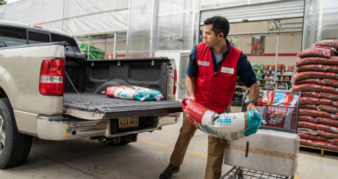
From Tractor Supply's start as a mail order catalog business in 1938, we've grown to become the largest operator of rural lifestyle retail stores in the United States.
We don't just sell tractor parts anymore though. Now our customers find everything they need to maintain their farms, ranches, homes and animals.
Our "secret sauce" however, is our culture. Combined with our Mission and Values, our Team Members are empowered to serve our customers and achieve our goals.
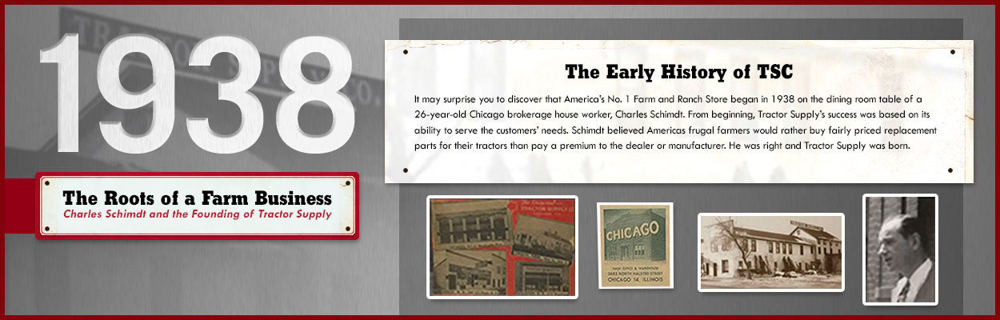
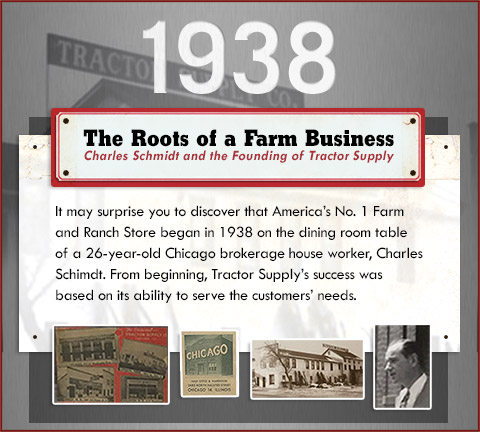
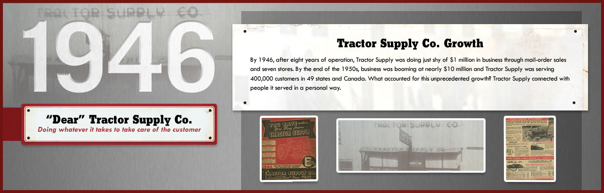
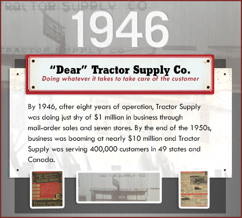
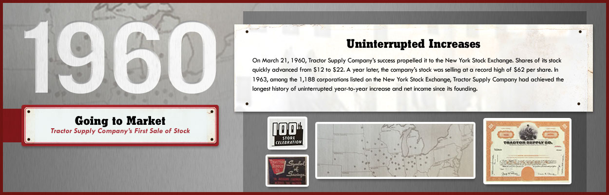
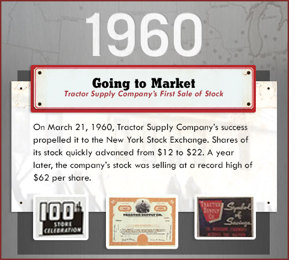
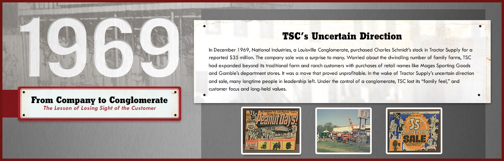
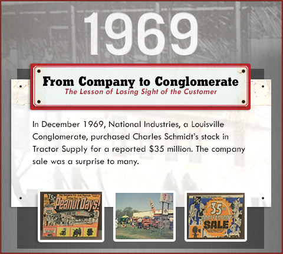
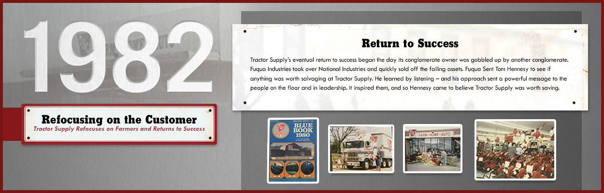
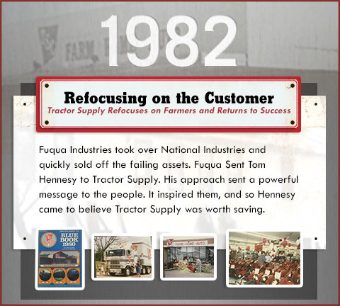
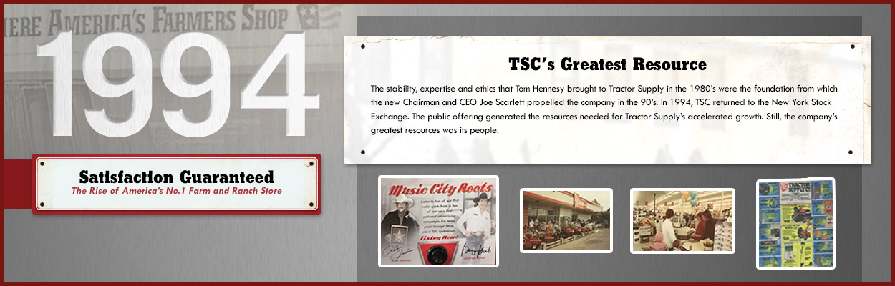
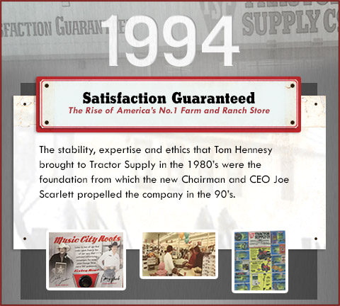
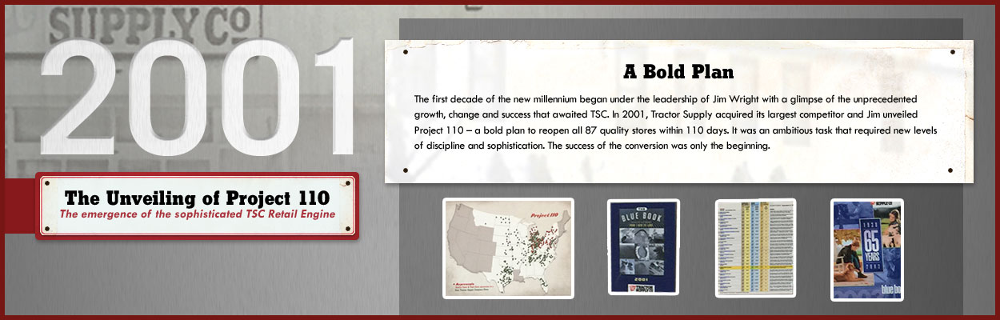
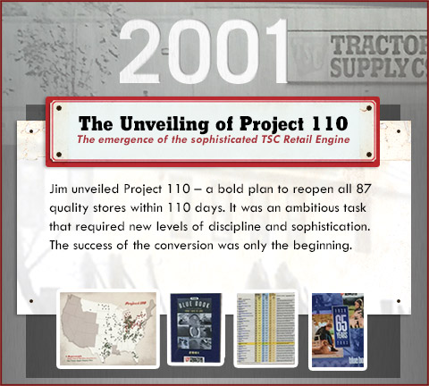
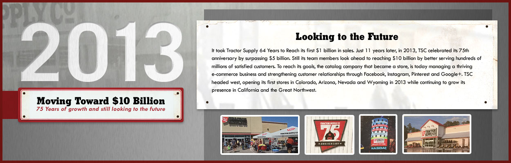
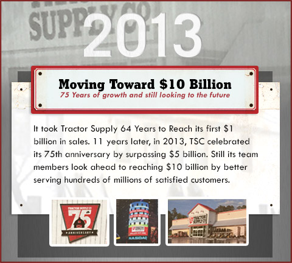
Tractor Supply believes a healthy environment, properly managed resources and vibrant communities are keys to a secure and prosperous future.
One of the great things about Tractor Supply is its intentional interaction with people and organizations for the purpose of circulating the concept of stewardship as a responsible part of living the Out Here lifestyle. We view our Stewardship Program as a process of continuous improvement as we look for ways to become more efficient, eliminate waste and reduce our impact on the environment.
#76
Most sustainable companies in America - Barron's
The Environment
We continuously work to improve our environmental impact by reducing resource consumption and waste, increasing efficiency and providing alternatives to customers and team members wherever appropriate.